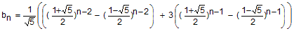
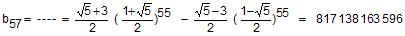
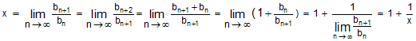
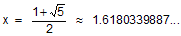

Lösung PUZZLE 31: Wie heisst die 57-ste Zahl?
Die rekursive Darstellung dieser Lucas-Folge lautet:
b1 = 1 , b2 = 3
bn+2 = bn+1 + bn (n = 1, 2, 3, ...)
Zum Suchen der expliziten Darstellung betrachtet man die allgemeine Lucas-Folge
b1, b2
b3 = b2 + b1
b4 = b3 + b2 = 1 b1 + 2 b2
b5 = b4 + b3 = 2 b1 + 3 b2
b6 = b5 + b4 = 3 b1 + 5 b2
b7 = b6 + b5 = 5 b1 + 8 b2
....
Die roten Zahlen sind aber genau die Zahlen (an) der Fibonacci-Folge. Es gilt daher
bn = bn-1 + bn-2 = an-2 b1 + an-1 b2 (n = 3, 4, 5, ...)
und damit gemäss der expliziten Darstellung der Fibonacci-Folge auf Fibonacci- und Lucas-Zahlen:

Die explizite Darstellung für die gesuchte Folge (b1 = 1 , b2 = 3) lautet daher:

Also gilt:

Nun zum Grenzwert x der Quotientenfolge:

Dies führt auf die Gleichung x2 - x - 1 = 0 (Goldener Schnitt). Ihre positive Lösung ist
